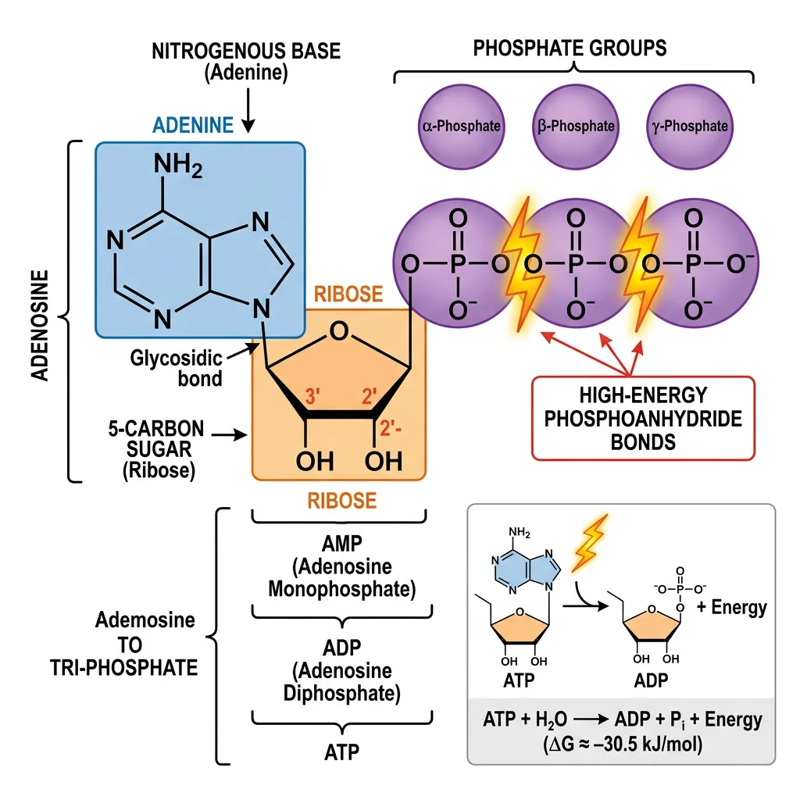
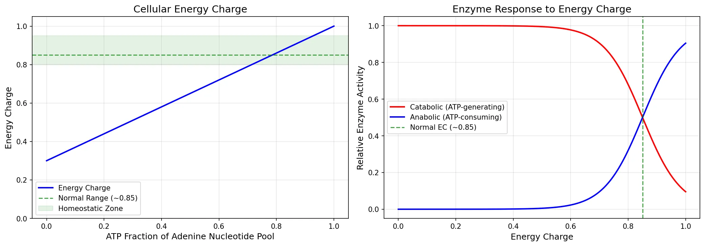
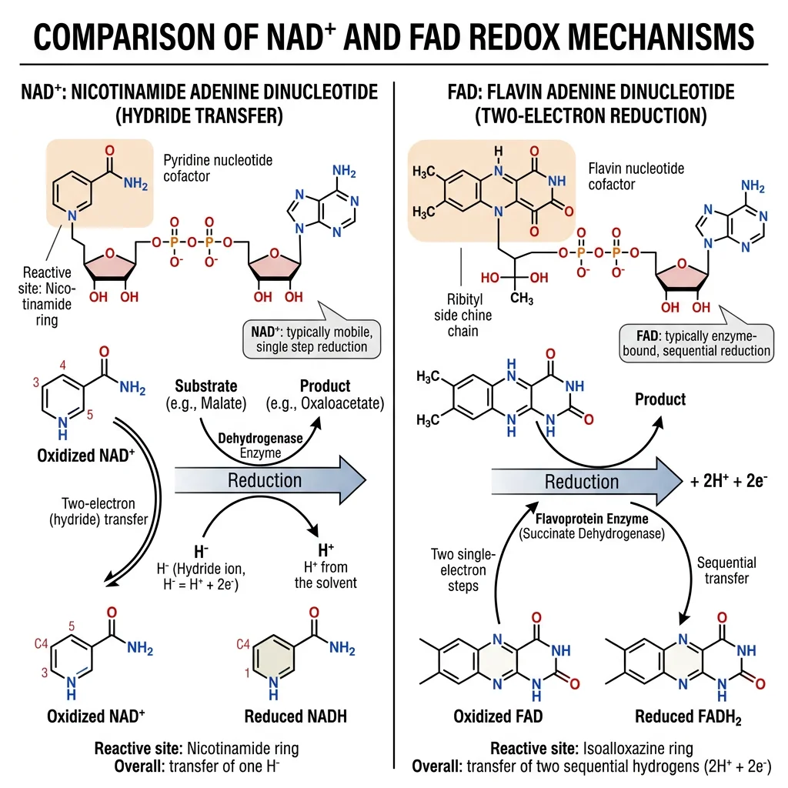
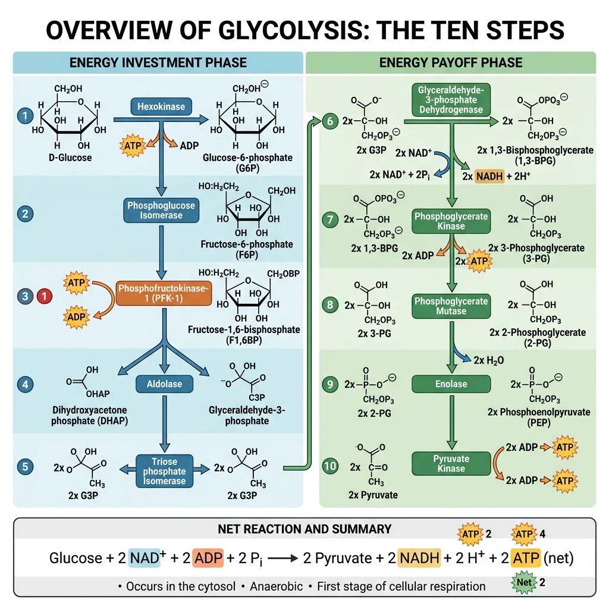
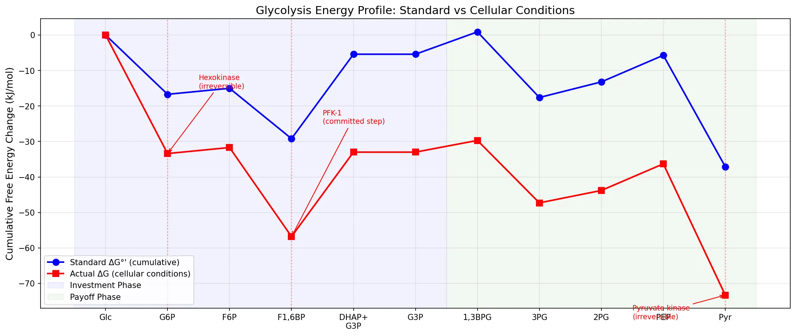
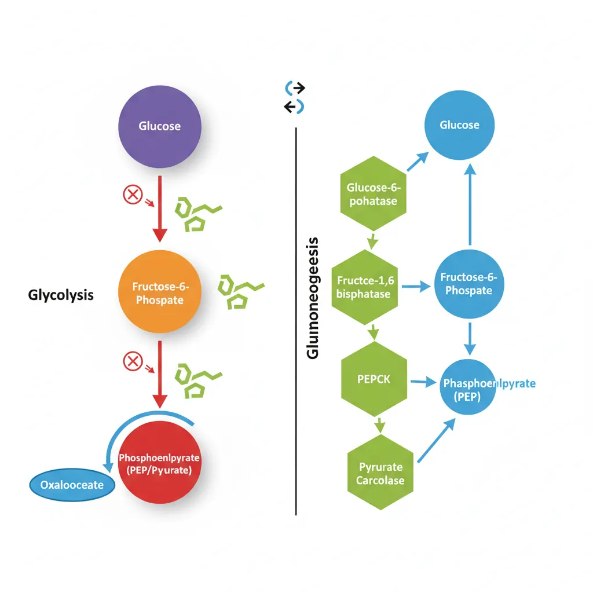
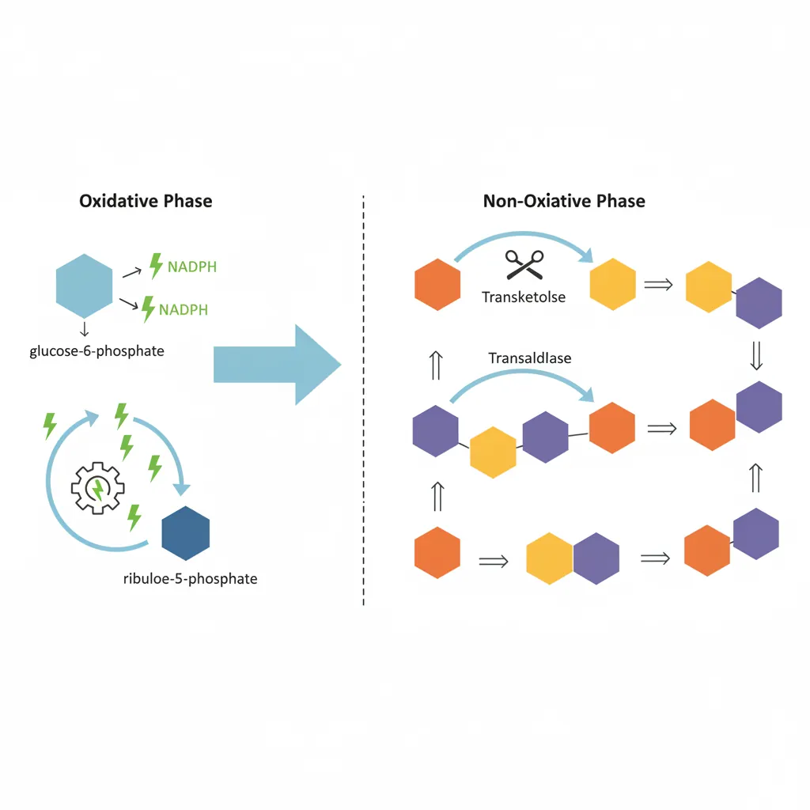
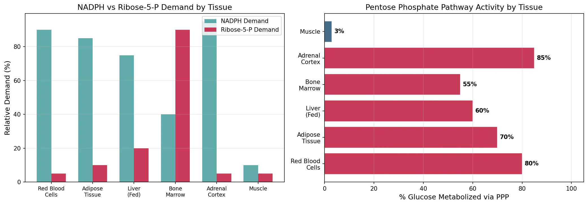
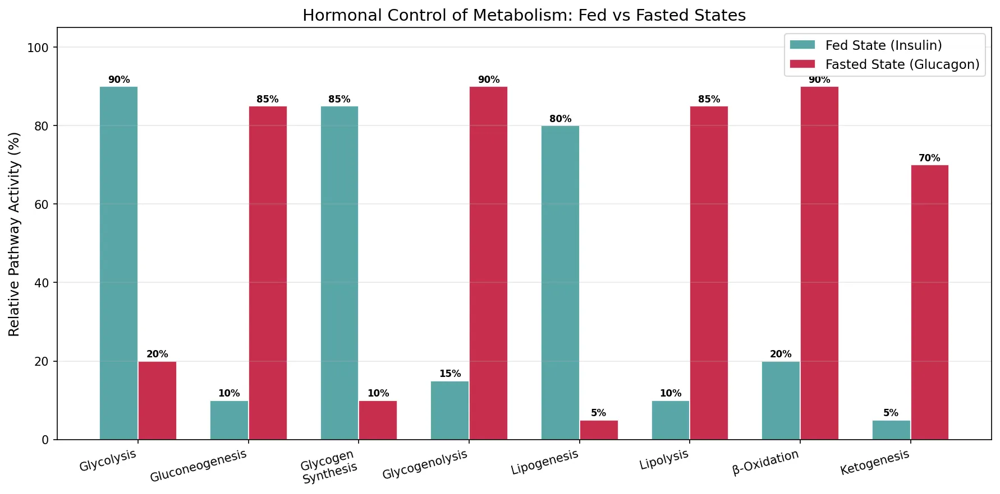

Biochemistry Mastery
Biological Chemistry Fundamentals
Atoms, bonds, functional groups, thermodynamicsWater, pH & Biological Buffers
Water polarity, pH, Henderson-Hasselbalch, blood buffersAmino Acids & Protein Structure
Amino acid classes, peptide bonds, protein foldingEnzymes & Catalysis
Kinetics, Michaelis-Menten, inhibition, regulationCarbohydrates & Lipids
Sugars, glycogen, fatty acids, cholesterol, membranesMetabolism & Bioenergetics
ATP, glycolysis, gluconeogenesis, redox carriersCitric Acid Cycle & Oxidative Phosphorylation
Acetyl-CoA, ETC, ATP synthase, oxygen dependenceSignal Transduction & Cell Communication
GPCRs, kinases, calcium, hormone cascadesNucleic Acids & Gene Expression
DNA, replication, transcription, translation, epigeneticsBrain & Nervous System Biochemistry
Neurotransmitters, ion gradients, myelin, neurodegenerationHeart & Muscle Biochemistry
Cardiac metabolism, actin-myosin, energy systemsLiver Biochemistry
Glucose homeostasis, detox, urea cycle, bileKidney Biochemistry & Acid-Base
pH regulation, ion transport, hormonal functionsEndocrine System Biochemistry
Hormone classes, signaling, glucose & stress controlDigestive System Biochemistry
Gastric acid, enzymes, bile, absorption, microbiomeImmune System Biochemistry
Antibodies, cytokines, complement, oxidative burstAdipose Tissue & Energy Balance
Triglycerides, lipolysis, leptin, obesityTissue-Specific Metabolism
Fed vs fasting, organ fuel selection, starvationMolecular Basis of Disease
Diabetes, cancer metabolism, neurodegenerationClinical Biochemistry & Diagnostics
Blood tests, liver/kidney markers, lipid panelsATP & Energy Currency
Every living cell requires a continuous supply of energy to maintain its structure, synthesize macromolecules, transport ions, and perform mechanical work. Adenosine triphosphate (ATP) serves as the universal energy currency — a remarkably versatile molecule that couples energy-releasing (exergonic) reactions to energy-requiring (endergonic) ones. Think of ATP as the "rechargeable battery" of the cell: it is constantly being discharged to ADP and recharged back to ATP, turning over its own weight roughly every 1–2 minutes.

ATP Structure
ATP consists of three components: (1) the nitrogenous base adenine, (2) the five-carbon sugar ribose, and (3) a chain of three phosphate groups linked by phosphoanhydride bonds. The terminal two phosphate bonds (β–γ and α–β) are often called "high-energy" bonds — not because the bonds themselves are unusually strong, but because their hydrolysis releases a large amount of free energy (~−30.5 kJ/mol under standard conditions, ~−50 to −54 kJ/mol under cellular conditions).
Why Is ATP Hydrolysis Exergonic?
Four factors make ATP hydrolysis thermodynamically favorable:
| Factor | Explanation |
|---|---|
| Electrostatic repulsion | Four negative charges clustered on the triphosphate chain repel each other; hydrolysis relieves this strain |
| Resonance stabilization | The products (ADP + Pᵢ) enjoy greater resonance delocalization than ATP itself |
| Solvation | Inorganic phosphate (Pᵢ) is better hydrated than the terminal phosphate of ATP |
| Entropy increase | One molecule becomes two, increasing the number of particles (ΔS > 0) |
ATP–ADP Cycle
The ATP–ADP cycle is the central mechanism by which cells transfer energy. Catabolic pathways (glycolysis, the TCA cycle, oxidative phosphorylation) regenerate ATP from ADP + Pᵢ, while biosynthetic reactions, active transport, and muscle contraction consume ATP. A resting human turns over approximately 40–70 kg of ATP per day — roughly equal to body weight — despite having only about 250 g of ATP at any instant.
The "High-Energy Bond" Concept
Fritz Lipmann introduced the concept of the "high-energy phosphate bond" and recognized ATP as the universal energy currency in his landmark 1941 paper. He used the squiggle symbol (~P) to denote bonds whose hydrolysis releases substantial free energy. Lipmann shared the 1953 Nobel Prize in Physiology or Medicine for discovering coenzyme A, another key metabolic carrier. His work unified our understanding of how cells harvest and spend energy.
Other Nucleoside Triphosphates
While ATP is the primary energy currency, cells also use GTP (protein synthesis, signal transduction), UTP (glycogen synthesis), and CTP (lipid synthesis). All are maintained at equilibrium with ATP via nucleoside diphosphate kinase: ATP + NDP ⇌ ADP + NTP (ΔG° ≈ 0).
Cellular Energy Charge
Daniel Atkinson introduced the concept of energy charge in the 1960s to describe the fraction of the total adenine nucleotide pool that carries "high-energy" phosphate bonds:
Energy Charge Equation
Energy Charge = ([ATP] + ½[ADP]) / ([ATP] + [ADP] + [AMP])
The energy charge ranges from 0 (all AMP) to 1.0 (all ATP). Most cells maintain an energy charge of 0.80–0.95, reflecting tight homeostatic control. Values below 0.80 activate catabolic pathways (ATP-generating); values above 0.95 activate anabolic pathways (ATP-consuming).
The energy charge acts as a metabolic "thermostat." Enzymes at critical branch points in metabolism respond to the ratio of ATP/ADP/AMP, ensuring that fuel consumption matches energy demand. For example:
- Phosphofructokinase-1 (PFK-1) — the key glycolytic enzyme — is inhibited by high ATP and activated by AMP
- Isocitrate dehydrogenase in the TCA cycle is activated by ADP and inhibited by ATP
- AMP-activated protein kinase (AMPK) senses rising AMP levels and switches on catabolic pathways while shutting down anabolic ones
import numpy as np
import matplotlib.pyplot as plt
# Calculate energy charge across different ATP:ADP:AMP ratios
# Simulating the energy charge spectrum
atp_fractions = np.linspace(0, 1, 100)
# For simplicity: assume ADP + AMP = 1 - ATP, split equally
adp_fractions = (1 - atp_fractions) * 0.6
amp_fractions = (1 - atp_fractions) * 0.4
total = atp_fractions + adp_fractions + amp_fractions
energy_charge = (atp_fractions + 0.5 * adp_fractions) / total
# Plot energy charge vs ATP fraction
fig, (ax1, ax2) = plt.subplots(1, 2, figsize=(14, 5))
# Left: Energy charge curve
ax1.plot(atp_fractions, energy_charge, 'b-', linewidth=2, label='Energy Charge')
ax1.axhline(y=0.85, color='green', linestyle='--', alpha=0.7, label='Normal Range (~0.85)')
ax1.axhspan(0.80, 0.95, alpha=0.1, color='green', label='Homeostatic Zone')
ax1.set_xlabel('ATP Fraction of Adenine Nucleotide Pool', fontsize=12)
ax1.set_ylabel('Energy Charge', fontsize=12)
ax1.set_title('Cellular Energy Charge', fontsize=14)
ax1.legend(fontsize=10)
ax1.set_ylim(0, 1.05)
ax1.grid(True, alpha=0.3)
# Right: Enzyme response to energy charge
ec_range = np.linspace(0, 1, 200)
# Catabolic enzymes (activated at low EC) — sigmoidal
catabolic_rate = 1 / (1 + np.exp(15 * (ec_range - 0.85)))
# Anabolic enzymes (activated at high EC) — sigmoidal
anabolic_rate = 1 / (1 + np.exp(-15 * (ec_range - 0.85)))
ax2.plot(ec_range, catabolic_rate, 'r-', linewidth=2, label='Catabolic (ATP-generating)')
ax2.plot(ec_range, anabolic_rate, 'b-', linewidth=2, label='Anabolic (ATP-consuming)')
ax2.axvline(x=0.85, color='green', linestyle='--', alpha=0.7, label='Normal EC (~0.85)')
ax2.set_xlabel('Energy Charge', fontsize=12)
ax2.set_ylabel('Relative Enzyme Activity', fontsize=12)
ax2.set_title('Enzyme Response to Energy Charge', fontsize=14)
ax2.legend(fontsize=10)
ax2.grid(True, alpha=0.3)
plt.tight_layout()
plt.savefig('energy_charge_regulation.png', dpi=150, bbox_inches='tight')
plt.show()
print("Energy charge at typical cellular conditions: ~0.85-0.90")
print("ATP turnover in resting adult: ~40-70 kg/day")

NAD+ & FAD Redox Carriers
Metabolism is fundamentally about electron transfer. When fuel molecules (glucose, fatty acids, amino acids) are oxidized, the electrons stripped from carbon–hydrogen bonds don't go directly to oxygen. Instead, they are captured by specialized coenzymes — principally NAD⁺ and FAD — which act as mobile electron carriers, shuttling reducing equivalents from catabolic reactions to the electron transport chain in mitochondria.
Think of NAD⁺ and FAD as "electron taxis": they pick up high-energy electrons at metabolic reaction sites and deliver them to Complex I and Complex II of the electron transport chain, where the electrons' energy is used to pump protons and ultimately drive ATP synthesis.

NAD⁺/NADH: The Primary Electron Carrier
Nicotinamide adenine dinucleotide (NAD⁺) is derived from the vitamin niacin (B3). It accepts two electrons and one proton (a hydride ion, H⁻) at the nicotinamide ring:
NAD⁺ Reduction Reaction
NAD⁺ + 2H → NADH + H⁺
The nicotinamide ring accepts a hydride ion (H⁻ = one proton + two electrons), while the second proton is released into solution. NADH carries electrons to Complex I of the electron transport chain, yielding approximately 2.5 ATP per NADH via oxidative phosphorylation.
| Property | NAD⁺ (Oxidized) | NADH (Reduced) |
|---|---|---|
| Charge | Positive (NAD⁺) | Neutral (NADH) |
| UV Absorption | 260 nm only | 260 nm + 340 nm (diagnostic peak) |
| Role | Electron acceptor (oxidizing agent) | Electron donor (reducing agent) |
| ETC Entry | — | Complex I (NADH dehydrogenase) |
| ATP Yield | — | ~2.5 ATP per NADH |
NADP⁺/NADPH: The Biosynthetic Electron Carrier
NADP⁺ is structurally identical to NAD⁺ except for an extra phosphate group on the 2'-hydroxyl of the adenine ribose. This seemingly minor difference creates a crucial functional division:
- NADH — primarily donates electrons to the ETC for ATP production (catabolic)
- NADPH — provides reducing power for biosynthetic reactions (anabolic): fatty acid synthesis, cholesterol synthesis, and detoxification by cytochrome P450 enzymes
The pentose phosphate pathway (Section 5) is the primary source of NADPH in most cells.
FAD/FADH2
Flavin adenine dinucleotide (FAD) is derived from the vitamin riboflavin (B2). Unlike NAD⁺, FAD is typically covalently bound to the enzymes that use it (flavoproteins), and it can accept electrons one at a time, passing through a semiquinone radical intermediate:
FAD Reduction
FAD + 2H → FADH₂
FAD accepts two electrons and two protons at its isoalloxazine ring. FADH₂ delivers electrons to Complex II (succinate dehydrogenase) of the ETC, yielding approximately 1.5 ATP per FADH₂. Because electrons enter at a lower energy level than Complex I, FADH₂ generates fewer ATP than NADH.
| Feature | NAD⁺/NADH | FAD/FADH₂ |
|---|---|---|
| Vitamin Precursor | Niacin (B3) | Riboflavin (B2) |
| Binding to Enzyme | Non-covalent (diffusible coenzyme) | Usually covalent (prosthetic group) |
| Electron Transfer | 2 electrons as hydride (H⁻) | 1 or 2 electrons (via radical intermediate) |
| ETC Entry Point | Complex I | Complex II |
| ATP Yield | ~2.5 ATP | ~1.5 ATP |
| Key Reactions | Glycolysis (GAPDH), TCA cycle (3 reactions), β-oxidation | Succinate → fumarate (TCA), acyl-CoA dehydrogenase (β-oxidation) |
Discovery of Coenzymes
Arthur Harden and William Young discovered that yeast fermentation required a heat-stable, dialyzable factor they called "cozymase" — later identified as NAD⁺. By separating yeast juice into a high-molecular-weight fraction (enzymes) and a low-molecular-weight fraction (coenzymes), they showed that neither fraction alone could ferment sugar. Only when recombined did fermentation proceed. Harden shared the 1929 Nobel Prize in Chemistry for this fundamental discovery that established coenzymes as essential partners in enzymatic catalysis.
Coenzyme Q and Cytochrome c
Beyond NAD⁺ and FAD, two additional mobile electron carriers operate within the ETC itself:
- Coenzyme Q (ubiquinone) — a lipid-soluble carrier embedded in the inner mitochondrial membrane; shuttles electrons from Complexes I and II to Complex III
- Cytochrome c — a small, water-soluble protein in the intermembrane space; transfers electrons from Complex III to Complex IV
Glycolysis
Glycolysis (from Greek glykys = sweet, lysis = splitting) is the ancient, universal pathway that splits one molecule of glucose (6 carbons) into two molecules of pyruvate (3 carbons each). It occurs in the cytoplasm of every living cell — from bacteria to neurons — and does not require oxygen, making it the cell's primary anaerobic energy source.
Glycolysis consists of 10 sequential enzymatic reactions divided into two phases: (1) the energy investment phase (steps 1–5), which consumes 2 ATP, and (2) the energy payoff phase (steps 6–10), which generates 4 ATP and 2 NADH. The net yield is 2 ATP + 2 NADH + 2 pyruvate per glucose.

flowchart TD
GLU["Glucose\n(C₆H₁₂O₆)"] -->|"Hexokinase\n(-1 ATP)"| G6P["Glucose-6-P"]
G6P --> F6P["Fructose-6-P"]
F6P -->|"PFK-1\n(-1 ATP)"| F16BP["Fructose-1,6-bisP"]
F16BP -->|"Aldolase"| G3P["2× G3P"]
G3P -->|"+2 NADH"| BPG["2× 1,3-BPG"]
BPG -->|"+2 ATP"| PG3["2× 3-PG"]
PG3 --> PEP["2× PEP"]
PEP -->|"Pyruvate Kinase\n+2 ATP"| PYR["2× Pyruvate"]
PYR -->|"Aerobic"| TCA["TCA Cycle"]
PYR -->|"Anaerobic"| LAC["Lactate"]
The Embden-Meyerhof-Parnas (EMP) Pathway
Glycolysis was the first metabolic pathway to be fully elucidated. Work by Embden, Meyerhof, and Parnas between 1897 and 1940 established every intermediate and enzyme. Meyerhof received the 1922 Nobel Prize in Physiology or Medicine for discovering the relationship between oxygen consumption and lactic acid metabolism in muscle. The complete pathway — sometimes called the EMP pathway — was a landmark achievement that demonstrated metabolism could be understood as a series of discrete chemical steps, each catalyzed by a specific enzyme.
Energy Investment Phase (Steps 1–5)
In the first five steps, the cell "invests" 2 ATP to phosphorylate and rearrange glucose, ultimately splitting it into two molecules of glyceraldehyde-3-phosphate (G3P):
| Step | Enzyme | Reaction | ΔG°' (kJ/mol) | Key Features |
|---|---|---|---|---|
| 1 | Hexokinase | Glucose → Glucose-6-phosphate | −16.7 | ATP consumed; irreversible; traps glucose in cell |
| 2 | Phosphoglucose isomerase | G6P → Fructose-6-phosphate | +1.7 | Isomerization; aldose → ketose |
| 3 | Phosphofructokinase-1 (PFK-1) | F6P → Fructose-1,6-bisphosphate | −14.2 | ATP consumed; committed step; major regulatory point |
| 4 | Aldolase | F1,6BP → DHAP + G3P | +23.8 | C6 → two C3 fragments; endergonic but pulled forward |
| 5 | Triose phosphate isomerase | DHAP ⇌ G3P | +7.5 | Converts DHAP to G3P; "catalytically perfect" enzyme |
PFK-1: The Gatekeeper of Glycolysis
Phosphofructokinase-1 catalyzes the committed step of glycolysis — the first irreversible reaction unique to the pathway. It is the most important regulatory enzyme in glycolysis, controlled by an extraordinary array of allosteric effectors:
- Activators: AMP, ADP, fructose-2,6-bisphosphate (most potent), Pᵢ
- Inhibitors: ATP (at high concentrations), citrate, H⁺ (low pH)
Fructose-2,6-bisphosphate (F2,6BP), produced by PFK-2, is the single most powerful activator of PFK-1. Its concentration is controlled by the hormones insulin and glucagon, linking glycolytic flux to the body's fed/fasted state.
Energy Payoff Phase (Steps 6–10)
In the second phase, each G3P is oxidized and converted to pyruvate, generating ATP and NADH. Since two G3P molecules are produced per glucose, all yields are doubled:
| Step | Enzyme | Reaction | ΔG°' (kJ/mol) | Key Features |
|---|---|---|---|---|
| 6 | Glyceraldehyde-3-P dehydrogenase | G3P → 1,3-Bisphosphoglycerate | +6.3 | NADH produced; oxidation + phosphorylation coupled |
| 7 | Phosphoglycerate kinase | 1,3-BPG → 3-Phosphoglycerate | −18.5 | ATP produced (substrate-level phosphorylation) |
| 8 | Phosphoglycerate mutase | 3-PG → 2-Phosphoglycerate | +4.4 | Phosphate group migration |
| 9 | Enolase | 2-PG → Phosphoenolpyruvate | +7.5 | Dehydration; creates high-energy enol phosphate |
| 10 | Pyruvate kinase | PEP → Pyruvate | −31.4 | ATP produced; irreversible; second regulatory point |
Net Glycolysis Balance Sheet
Glucose + 2 NAD⁺ + 2 ADP + 2 Pᵢ → 2 Pyruvate + 2 NADH + 2 ATP + 2 H₂O + 2 H⁺
Investment: 2 ATP consumed (steps 1 & 3). Payoff: 4 ATP produced (steps 7 & 10, each ×2). Net: 2 ATP + 2 NADH per glucose. The 2 NADH must be reoxidized — either by the ETC (aerobically, yielding ~5 additional ATP) or by lactate dehydrogenase / alcohol dehydrogenase (anaerobically, yielding 0 additional ATP).
Fates of Pyruvate
Pyruvate sits at a critical metabolic crossroads. Its fate depends on oxygen availability and tissue type:
- Aerobic conditions: Pyruvate enters mitochondria → converted to acetyl-CoA by pyruvate dehydrogenase → enters TCA cycle
- Anaerobic conditions (muscle): Pyruvate → lactate (via lactate dehydrogenase), regenerating NAD⁺ to sustain glycolysis
- Anaerobic conditions (yeast): Pyruvate → ethanol + CO₂ (alcoholic fermentation)
Regulation of Glycolysis
Glycolysis is regulated at three irreversible steps, each catalyzed by enzymes with large negative ΔG values:
| Regulatory Enzyme | Step | Activators | Inhibitors | Hormonal Control |
|---|---|---|---|---|
| Hexokinase | 1 | — | Glucose-6-phosphate (product inhibition) | Glucokinase (liver isoform) induced by insulin |
| PFK-1 | 3 | AMP, F2,6BP, Pᵢ | ATP, citrate, H⁺ | Insulin ↑ F2,6BP; Glucagon ↓ F2,6BP |
| Pyruvate kinase | 10 | F1,6BP (feed-forward), PEP | ATP, alanine, acetyl-CoA | Glucagon → phosphorylation → inactivation (liver) |
Clinical Connection: The Warburg Effect
Cancer cells exhibit aerobic glycolysis — they preferentially convert glucose to lactate even in the presence of oxygen, a phenomenon described by Otto Warburg in the 1920s. This "Warburg effect" results in cancer cells consuming glucose at rates 10–100× higher than normal tissue. This is the biochemical basis for PET scanning (positron emission tomography): ¹⁸F-fluorodeoxyglucose (FDG) accumulates in rapidly glycolyzing tumors, making them visible on scans.
import numpy as np
import matplotlib.pyplot as plt
# Glycolysis energy profile — ΔG°' for each step
steps = ['Glc', 'G6P', 'F6P', 'F1,6BP', 'DHAP+\nG3P', 'G3P',
'1,3BPG', '3PG', '2PG', 'PEP', 'Pyr']
# Cumulative standard free energy (kJ/mol) at each intermediate
delta_g_standard = [0, -16.7, -15.0, -29.2, -5.4, -5.4,
0.9, -17.6, -13.2, -5.7, -37.1]
# Actual cellular ΔG values (more negative due to concentrations)
delta_g_actual = [0, -33.4, -31.7, -56.8, -33.0, -33.0,
-29.7, -47.3, -43.8, -36.3, -73.3]
fig, ax = plt.subplots(figsize=(14, 6))
x = np.arange(len(steps))
ax.plot(x, delta_g_standard, 'bo-', linewidth=2, markersize=8,
label="Standard ΔG°' (cumulative)")
ax.plot(x, delta_g_actual, 'rs-', linewidth=2, markersize=8,
label="Actual ΔG (cellular conditions)")
# Highlight irreversible steps (1, 3, 10)
for idx in [1, 3, 10]:
ax.axvline(x=idx, color='red', linestyle=':', alpha=0.3)
ax.annotate('Hexokinase\n(irreversible)', xy=(1, delta_g_actual[1]),
xytext=(1.5, -15), fontsize=9, color='red',
arrowprops=dict(arrowstyle='->', color='red'))
ax.annotate('PFK-1\n(committed step)', xy=(3, delta_g_actual[3]),
xytext=(3.5, -25), fontsize=9, color='red',
arrowprops=dict(arrowstyle='->', color='red'))
ax.annotate('Pyruvate kinase\n(irreversible)', xy=(10, delta_g_actual[10]),
xytext=(8.5, -80), fontsize=9, color='red',
arrowprops=dict(arrowstyle='->', color='red'))
# Phase labels
ax.axvspan(-0.5, 5.5, alpha=0.05, color='blue', label='Investment Phase')
ax.axvspan(5.5, 10.5, alpha=0.05, color='green', label='Payoff Phase')
ax.set_xticks(x)
ax.set_xticklabels(steps, fontsize=10)
ax.set_ylabel('Cumulative Free Energy Change (kJ/mol)', fontsize=12)
ax.set_title('Glycolysis Energy Profile: Standard vs Cellular Conditions', fontsize=14)
ax.legend(fontsize=10, loc='lower left')
ax.grid(True, alpha=0.3)
plt.tight_layout()
plt.savefig('glycolysis_energy_profile.png', dpi=150, bbox_inches='tight')
plt.show()
print("Net yield per glucose: 2 ATP + 2 NADH + 2 pyruvate")
print("Three irreversible steps: hexokinase, PFK-1, pyruvate kinase")

Gluconeogenesis
Gluconeogenesis (literally "new glucose production") is the synthesis of glucose from non-sugar precursors — primarily lactate, glycerol, and glucogenic amino acids. It occurs mainly in the liver (90%) and kidney cortex (10%), and is essential for maintaining blood glucose during fasting, starvation, and prolonged exercise when glycogen reserves are depleted.
Gluconeogenesis is not simply the reverse of glycolysis. While seven of the ten glycolytic enzymes are shared (their reactions are near-equilibrium and freely reversible), the three irreversible glycolytic steps must be bypassed by different enzymes:

The Four Bypass Reactions
| Glycolysis (Irreversible) | Gluconeogenesis Bypass | Enzyme(s) | Location |
|---|---|---|---|
| Pyruvate → (cannot reverse to PEP) | Pyruvate → Oxaloacetate → PEP | Pyruvate carboxylase (biotin-dependent) + PEPCK | Mitochondria → Cytoplasm |
| F1,6BP → (cannot reverse to F6P) | F1,6BP → F6P + Pᵢ | Fructose-1,6-bisphosphatase | Cytoplasm |
| G6P → (cannot reverse to glucose) | G6P → Glucose + Pᵢ | Glucose-6-phosphatase | ER membrane (liver & kidney only) |
Energetic Cost of Gluconeogenesis
Synthesizing one glucose from two pyruvates costs 4 ATP + 2 GTP + 2 NADH — significantly more than the 2 ATP generated by glycolysis. This asymmetry ensures that both pathways are thermodynamically favorable in their respective directions and prevents futile cycling (simultaneous operation of both pathways). The net cost is: 2 Pyruvate + 4 ATP + 2 GTP + 2 NADH + 6 H₂O → Glucose + 4 ADP + 2 GDP + 6 Pᵢ + 2 NAD⁺.
Gluconeogenic Precursors
Three major classes of molecules serve as glucose precursors:
- Lactate — produced by anaerobic glycolysis in muscle and red blood cells; converted to pyruvate by lactate dehydrogenase in the liver
- Glycerol — released from triglyceride lipolysis in adipose tissue; enters at the level of dihydroxyacetone phosphate (DHAP)
- Glucogenic amino acids — 18 of the 20 amino acids can be converted to glucose via their carbon skeletons (e.g., alanine → pyruvate, glutamate → α-ketoglutarate → oxaloacetate)
Why Can't Fatty Acids Make Glucose?
In animals, acetyl-CoA from β-oxidation cannot be converted to glucose. The pyruvate dehydrogenase reaction (pyruvate → acetyl-CoA) is irreversible, and there is no net conversion of acetyl-CoA to oxaloacetate in the TCA cycle (the two carbons entering as acetyl-CoA are lost as 2 CO₂). Plants and bacteria possess the glyoxylate cycle, which bypasses the CO₂-releasing steps and allows net conversion of acetyl-CoA to oxaloacetate — and hence to glucose.
Cori Cycle
The Cori cycle (named after Carl and Gerty Cori, Nobel Prize 1947) is the metabolic cooperation between muscle and liver that recycles lactate:
The Cori Cycle: Metabolic Cooperation Between Organs
During intense exercise, skeletal muscle produces lactate faster than it can be oxidized. Lactate exits muscle cells into the blood, travels to the liver, and is reconverted to glucose via gluconeogenesis. The newly synthesized glucose returns to the blood, where it can be taken up again by muscle. The Coris demonstrated this elegant recycling loop in the 1920s–30s and won the 1947 Nobel Prize — Gerty Cori becoming the first American woman to win a Nobel Prize in science.
Cycle summary: Muscle (glycolysis: Glucose → 2 Lactate + 2 ATP) → Blood → Liver (gluconeogenesis: 2 Lactate + 6 ATP → Glucose) → Blood → Muscle
Note the energetic asymmetry: muscle gains 2 ATP, but the liver spends 6 ATP equivalents. The net cost (4 ATP) is borne by the liver, which uses fatty acid oxidation to fuel gluconeogenesis. This represents a shift of metabolic burden from muscle to liver.
Reciprocal Regulation of Glycolysis and Gluconeogenesis
Glycolysis and gluconeogenesis are reciprocally regulated to prevent futile cycling — the wasteful simultaneous operation of both pathways. The same allosteric effectors and hormonal signals that activate one pathway inhibit the other:
| Signal | Effect on Glycolysis | Effect on Gluconeogenesis |
|---|---|---|
| High ATP/citrate | ↓ Inhibits PFK-1 | ↑ Activates F1,6-bisphosphatase |
| High AMP | ↑ Activates PFK-1 | ↓ Inhibits F1,6-bisphosphatase |
| Fructose-2,6-bisphosphate | ↑ Most potent PFK-1 activator | ↓ Inhibits F1,6-bisphosphatase |
| Insulin (fed state) | ↑ Induces glucokinase, PFK-2 | ↓ Represses PEPCK, G6Pase |
| Glucagon (fasted) | ↓ Phosphorylates/inactivates PFK-2, PK | ↑ Induces PEPCK, G6Pase |
| Acetyl-CoA | ↓ Inhibits pyruvate dehydrogenase | ↑ Activates pyruvate carboxylase |
Pentose Phosphate Pathway
The pentose phosphate pathway (PPP) — also called the hexose monophosphate shunt — is an alternative route for glucose-6-phosphate oxidation that serves two critical purposes: (1) production of NADPH for reductive biosynthesis and antioxidant defense, and (2) synthesis of ribose-5-phosphate for nucleotide and nucleic acid biosynthesis. The PPP operates in the cytoplasm and is especially active in tissues with high biosynthetic demands (liver, adipose tissue, adrenal cortex, lactating mammary gland, red blood cells).

Oxidative Phase: NADPH Production
The oxidative phase is irreversible and generates NADPH by oxidizing glucose-6-phosphate to ribulose-5-phosphate:
| Step | Enzyme | Reaction | Product |
|---|---|---|---|
| 1 | Glucose-6-phosphate dehydrogenase (G6PD) | G6P → 6-Phosphoglucono-δ-lactone | NADPH (1st) |
| 2 | 6-Phosphogluconolactonase | Lactone → 6-Phosphogluconate | H₂O consumed |
| 3 | 6-Phosphogluconate dehydrogenase | 6-PG → Ribulose-5-phosphate + CO₂ | NADPH (2nd) |
NADPH: The Antioxidant Currency
NADPH is the cell's primary defense against oxidative stress. It maintains glutathione in its reduced form (GSH) via glutathione reductase. Reduced glutathione detoxifies reactive oxygen species (ROS) via glutathione peroxidase: 2 GSH + H₂O₂ → GSSG + 2 H₂O. In red blood cells — which lack mitochondria and depend entirely on the PPP for NADPH — this pathway is literally life-saving.
G6PD Deficiency: 400 Million People Affected
Glucose-6-phosphate dehydrogenase (G6PD) deficiency is the most common human enzyme deficiency, affecting ~400 million people worldwide, predominantly in malaria-endemic regions of Africa, the Mediterranean, and Southeast Asia. The deficiency impairs NADPH production in red blood cells, making them vulnerable to oxidative damage.
Affected individuals are usually asymptomatic but can develop acute hemolytic anemia when exposed to oxidative stresses: certain drugs (primaquine, sulfonamides, dapsone), infections, or fava beans ("favism"). The condition is X-linked, so males are more frequently affected. Paradoxically, the deficiency provides partial protection against Plasmodium falciparum malaria — explaining its high prevalence in malaria-endemic regions via natural selection.
Non-oxidative Phase
The non-oxidative phase is a series of reversible sugar interconversions catalyzed by transketolase (requires thiamine pyrophosphate, vitamin B1) and transaldolase. This phase connects the PPP to glycolysis by interconverting 3-, 4-, 5-, 6-, and 7-carbon sugars:
Non-oxidative Phase Summary
3 Ribulose-5-P → 2 Fructose-6-P + 1 Glyceraldehyde-3-P
The products (F6P and G3P) are glycolytic intermediates, allowing the carbon skeletons to re-enter glycolysis. This flexibility means the PPP can adjust its output based on cellular needs:
Metabolic Modes of the PPP
The cell can operate the PPP in different modes depending on which products it needs most:
| Mode | Cell Needs | PPP Operation | Example Tissue |
|---|---|---|---|
| Mode 1 | Ribose-5-P > NADPH | Non-oxidative only; F6P + G3P → R5P (reverse direction) | Rapidly dividing cells (bone marrow, tumors) |
| Mode 2 | NADPH and R5P equally | Oxidative phase produces both; balanced output | Cells in S-phase of cell cycle |
| Mode 3 | NADPH >> R5P | Both phases; R5P recycled back to G6P via non-oxidative phase + gluconeogenesis | Adipose, liver (fatty acid synthesis) |
| Mode 4 | NADPH + ATP | Both phases; G3P and F6P enter glycolysis for ATP | Red blood cells |
import numpy as np
import matplotlib.pyplot as plt
# PPP flux distribution across different cell types
cell_types = ['Red Blood\nCells', 'Adipose\nTissue', 'Liver\n(Fed)', 'Bone\nMarrow', 'Adrenal\nCortex', 'Muscle']
nadph_demand = [90, 85, 75, 40, 95, 10] # relative NADPH demand
r5p_demand = [5, 10, 20, 90, 5, 5] # relative R5P demand
ppp_flux = [80, 70, 60, 55, 85, 3] # % glucose through PPP
fig, (ax1, ax2) = plt.subplots(1, 2, figsize=(14, 5))
# Left: Stacked bar — NADPH vs R5P demand
x = np.arange(len(cell_types))
width = 0.35
ax1.bar(x - width/2, nadph_demand, width, label='NADPH Demand',
color='#3B9797', alpha=0.8)
ax1.bar(x + width/2, r5p_demand, width, label='Ribose-5-P Demand',
color='#BF092F', alpha=0.8)
ax1.set_xticks(x)
ax1.set_xticklabels(cell_types, fontsize=9)
ax1.set_ylabel('Relative Demand (%)', fontsize=12)
ax1.set_title('NADPH vs Ribose-5-P Demand by Tissue', fontsize=13)
ax1.legend(fontsize=10)
ax1.grid(axis='y', alpha=0.3)
# Right: PPP flux as % of glucose metabolism
colors = ['#BF092F' if f > 50 else '#16476A' for f in ppp_flux]
bars = ax2.barh(cell_types, ppp_flux, color=colors, alpha=0.8, edgecolor='white')
ax2.set_xlabel('% Glucose Metabolized via PPP', fontsize=12)
ax2.set_title('Pentose Phosphate Pathway Activity by Tissue', fontsize=13)
for bar, val in zip(bars, ppp_flux):
ax2.text(bar.get_width() + 1, bar.get_y() + bar.get_height()/2,
f'{val}%', va='center', fontsize=10, fontweight='bold')
ax2.set_xlim(0, 105)
ax2.grid(axis='x', alpha=0.3)
plt.tight_layout()
plt.savefig('ppp_tissue_distribution.png', dpi=150, bbox_inches='tight')
plt.show()
print("Oxidative phase: 2 NADPH + 1 CO2 per glucose-6-phosphate")
print("G6PD deficiency affects ~400 million people worldwide")

Metabolic Regulation
Metabolism is not a collection of independent reactions but a tightly coordinated network regulated at multiple levels to match energy supply with demand. Cells employ four principal regulatory strategies — substrate availability, allosteric regulation, covalent modification, and transcriptional control — operating on timescales from milliseconds to hours.
Levels of Metabolic Control
| Level | Mechanism | Timescale | Example |
|---|---|---|---|
| Substrate availability | Reaction rate depends on substrate concentration | Milliseconds | Blood glucose level determines hexokinase activity |
| Allosteric regulation | Effector molecules bind at regulatory sites, changing enzyme activity | Milliseconds–seconds | ATP inhibits PFK-1; AMP activates PFK-1 |
| Covalent modification | Phosphorylation/dephosphorylation by kinases/phosphatases | Seconds–minutes | Glucagon → cAMP → PKA → phosphorylates pyruvate kinase (inactivates) |
| Enzyme amount | Gene expression / protein degradation changes enzyme quantity | Hours–days | Insulin induces glucokinase transcription; glucagon induces PEPCK |
Key Allosteric Regulators
Several small molecules serve as universal metabolic "sensors" whose concentrations reflect the cell's energy state:
- ATP — signals energy sufficiency; inhibits catabolic enzymes (PFK-1, isocitrate dehydrogenase, pyruvate dehydrogenase)
- AMP — signals energy deficit; activates AMPK, PFK-1, and glycogen phosphorylase
- Citrate — signals biosynthetic precursor abundance; inhibits PFK-1, activates acetyl-CoA carboxylase
- Acetyl-CoA — signals fatty acid oxidation status; activates pyruvate carboxylase, inhibits pyruvate dehydrogenase
- NADH/NAD⁺ ratio — high ratio inhibits TCA cycle dehydrogenases and pyruvate dehydrogenase
AMP-Activated Protein Kinase: The Cellular Fuel Gauge
AMPK is a serine/threonine kinase activated by rising AMP:ATP ratio — the cell's equivalent of a low-fuel warning light. When energy is depleted, AMPK simultaneously activates pathways that generate ATP (fatty acid oxidation, glucose uptake, autophagy) and inhibits ATP-consuming processes (fatty acid synthesis, protein synthesis, gluconeogenesis). AMPK is activated by exercise, caloric restriction, and the diabetes drug metformin — making it a major therapeutic target. It has been called the "guardian of metabolism" for its central role in energy homeostasis.
Hormonal Regulation
Systemic metabolic coordination is achieved primarily through two opposing pancreatic hormones:
| Feature | Insulin (Fed State) | Glucagon (Fasted State) |
|---|---|---|
| Secreted by | Pancreatic β-cells | Pancreatic α-cells |
| Trigger | High blood glucose (>5.5 mM) | Low blood glucose (<3.5 mM) |
| Signal cascade | Receptor tyrosine kinase → PI3K → Akt → phosphodiesterase ↓ cAMP | GPCR → Gₛ → adenylyl cyclase → ↑ cAMP → PKA |
| Glycolysis | ↑ (induces glucokinase, ↑ F2,6BP) | ↓ (↓ F2,6BP, phosphorylates PK) |
| Gluconeogenesis | ↓ (represses PEPCK, G6Pase) | ↑ (induces PEPCK, G6Pase) |
| Glycogen | ↑ Synthesis (activates glycogen synthase) | ↑ Breakdown (activates glycogen phosphorylase) |
| Fat metabolism | ↑ Lipogenesis, ↓ Lipolysis | ↑ Lipolysis, ↑ β-oxidation, ↑ Ketogenesis |
| Overall effect | Lower blood glucose, store fuel | Raise blood glucose, mobilize fuel |
Clinical Connection: Diabetes Mellitus
Type 1 diabetes results from autoimmune destruction of β-cells (no insulin production), while Type 2 diabetes involves insulin resistance (cells fail to respond normally to insulin). In both cases, the metabolic consequences are similar: uncontrolled gluconeogenesis, impaired glucose uptake, excessive lipolysis, and ketoacidosis in severe cases. Understanding the insulin/glucagon regulatory axis is essential for managing these conditions.
The Fructose-2,6-Bisphosphate Switch
The bifunctional enzyme PFK-2/FBPase-2 is a masterstroke of metabolic engineering. This single protein has two catalytic domains: a kinase domain (PFK-2) that makes F2,6BP, and a phosphatase domain (FBPase-2) that degrades it. The balance between these activities is controlled by phosphorylation:
- Insulin (fed) → dephosphorylation → PFK-2 active → ↑ F2,6BP → ↑ glycolysis
- Glucagon (fasted) → PKA phosphorylation → FBPase-2 active → ↓ F2,6BP → ↑ gluconeogenesis
This elegant mechanism allows a single phosphorylation event to simultaneously accelerate one pathway and brake the other — the quintessential reciprocal regulatory switch.
import numpy as np
import matplotlib.pyplot as plt
# Metabolic pathway regulation under fed vs fasted states
pathways = ['Glycolysis', 'Gluconeogenesis', 'Glycogen\nSynthesis',
'Glycogenolysis', 'Lipogenesis', 'Lipolysis',
'β-Oxidation', 'Ketogenesis']
fed_activity = [90, 10, 85, 15, 80, 10, 20, 5] # % activity in fed state
fasted_activity = [20, 85, 10, 90, 5, 85, 90, 70] # % activity in fasted state
fig, ax = plt.subplots(figsize=(12, 6))
x = np.arange(len(pathways))
width = 0.35
bars1 = ax.bar(x - width/2, fed_activity, width, label='Fed State (Insulin)',
color='#3B9797', alpha=0.85, edgecolor='white')
bars2 = ax.bar(x + width/2, fasted_activity, width, label='Fasted State (Glucagon)',
color='#BF092F', alpha=0.85, edgecolor='white')
ax.set_xticks(x)
ax.set_xticklabels(pathways, fontsize=10, rotation=15, ha='right')
ax.set_ylabel('Relative Pathway Activity (%)', fontsize=12)
ax.set_title('Hormonal Control of Metabolism: Fed vs Fasted States', fontsize=14)
ax.legend(fontsize=11, loc='upper right')
ax.set_ylim(0, 105)
ax.grid(axis='y', alpha=0.3)
# Add value labels
for bar in bars1:
ax.text(bar.get_x() + bar.get_width()/2, bar.get_height() + 1,
f'{int(bar.get_height())}%', ha='center', fontsize=8, fontweight='bold')
for bar in bars2:
ax.text(bar.get_x() + bar.get_width()/2, bar.get_height() + 1,
f'{int(bar.get_height())}%', ha='center', fontsize=8, fontweight='bold')
plt.tight_layout()
plt.savefig('metabolic_regulation_fed_fasted.png', dpi=150, bbox_inches='tight')
plt.show()
print("Insulin: store fuel (anabolic)")
print("Glucagon: mobilize fuel (catabolic)")
print("F2,6BP is the most potent regulator of glycolysis vs gluconeogenesis")

Practice Exercises
Problem 1: ATP Hydrolysis
Name the four factors that make ATP hydrolysis thermodynamically favorable. Which factor involves an increase in the number of molecules?
View Answer
The four factors are: (1) Electrostatic repulsion — relief of charge–charge repulsion among the phosphate oxygens; (2) Resonance stabilization — products (ADP + Pᵢ) have greater resonance than ATP; (3) Solvation — Pᵢ is better hydrated than the terminal phosphate on ATP; (4) Entropy increase — one molecule becomes two, increasing disorder (ΔS > 0). The entropy increase involves more molecules.
Problem 2: Glycolysis Accounting
If a cell metabolizes 5 molecules of glucose through glycolysis, how many molecules of (a) ATP are consumed, (b) ATP are produced, (c) net ATP, and (d) NADH are produced?
View Answer
Per glucose: invest 2 ATP, produce 4 ATP (net 2 ATP), produce 2 NADH. For 5 glucose molecules: (a) 5 × 2 = 10 ATP consumed; (b) 5 × 4 = 20 ATP produced; (c) 5 × 2 = 10 net ATP; (d) 5 × 2 = 10 NADH.
Problem 3: Gluconeogenesis vs Glycolysis
Explain why gluconeogenesis is not simply the reverse of glycolysis. Which three glycolytic steps require bypass reactions, and what enzymes catalyze those bypasses?
View Answer
Glycolysis has three irreversible steps with large negative ΔG values that cannot be simply reversed: (1) Pyruvate kinase (step 10) — bypassed by pyruvate carboxylase (pyruvate → OAA) + PEPCK (OAA → PEP); (2) PFK-1 (step 3) — bypassed by fructose-1,6-bisphosphatase (F1,6BP → F6P); (3) Hexokinase (step 1) — bypassed by glucose-6-phosphatase (G6P → glucose). The remaining 7 steps are near-equilibrium and shared by both pathways.
Problem 4: G6PD Deficiency
Explain why G6PD deficiency primarily affects red blood cells. Why might this deficiency persist at high frequency in certain populations despite being harmful?
View Answer
Red blood cells lack mitochondria and cannot generate NADPH via other pathways (such as malic enzyme or isocitrate dehydrogenase in the cytoplasm). They depend entirely on the PPP — specifically G6PD — for NADPH to maintain reduced glutathione and protect against oxidative damage. Without adequate NADPH, RBCs are vulnerable to hemolysis under oxidative stress. The deficiency persists at high frequency because it confers partial protection against malaria — an example of balancing selection (heterozygote advantage) similar to sickle cell trait.
Problem 5: Metabolic Regulation
A patient's blood tests show high glucagon and low insulin levels. Predict the metabolic state of their liver. Which pathways are active and which are suppressed?
View Answer
High glucagon/low insulin indicates a fasted state. In the liver: Active pathways — gluconeogenesis (↑ PEPCK, G6Pase), glycogenolysis (glycogen phosphorylase activated by PKA cascade), β-oxidation, ketogenesis, lipolysis. Suppressed pathways — glycolysis (PFK-1 inhibited by low F2,6BP; pyruvate kinase phosphorylated/inactivated), glycogen synthesis, lipogenesis. The net effect is glucose release into the blood to maintain blood glucose for the brain and red blood cells.
Metabolism & Bioenergetics Worksheet
Metabolism Analysis Tool
Enter metabolic pathway details to generate a comprehensive study worksheet. Download as Word, Excel, or PDF.
Conclusion & Next Steps
In this article, we explored the foundational machinery of cellular energy metabolism — from ATP as the universal energy currency and NAD⁺/FAD as electron shuttles, through the complete glycolysis pathway, the reverse pathway of gluconeogenesis, and the versatile pentose phosphate pathway. We also examined how cells regulate metabolic flux through allosteric effectors, covalent modification, and hormonal signaling via insulin and glucagon.
Key takeaways include: (1) ATP is continuously recycled at extraordinary rates (~40-70 kg/day in a resting adult), (2) glycolysis is regulated at three irreversible steps with PFK-1 as the primary gatekeeper, (3) glycolysis and gluconeogenesis are reciprocally regulated to prevent futile cycling, (4) the PPP provides NADPH and ribose-5-phosphate with tissue-specific flux modes, and (5) the insulin/glucagon axis coordinates metabolism across the entire organism.